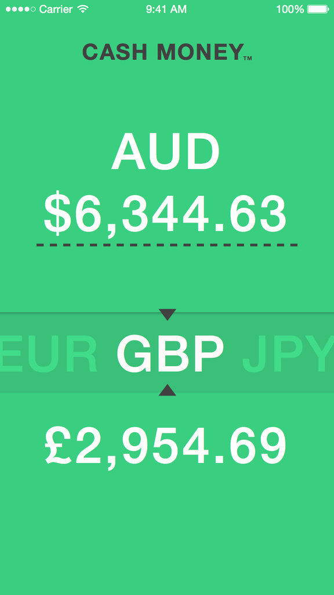

iOS Developer
A short test project for iOS developers
We want you to build a simple single-screen currency converter app.
- Make a new git repo and check it into GitHub
-
Make the repo public.
From now on, please commit frequently and write meaningful commit messages.
-
For this test, we want you to build a simple single-screen currency converter app using Swift 2.0.
A note: You might not yet be as proficient in Swift as you are in Objective-C. We totally understand that but we have a project going that uses Swift so we’ve decided to make Swift a requirement for this test. There will be time for you to get up to speed with Swift during the project but you should at least be starting to learn it now. Fill us in with where you’re at with learning Swift when you submit the test (details for that below).
- The app should work on any device running iOS 9
- The app should look like the UI mockup below on an iPhone 6 and should be usable different screen sizes.
- Please avoid third party libraries if you can help it. We’d like to be able to just open it in XCode and run it in the iOS Simulator.
The font is Helvetica (56pt max, scaling down dynamically as required eg. for really big numbers).
UPDATE: Yes, we know that Helvetica requires an very expensive license if you want to use it for a project. We don’t want you to buy a license. Do what you can with a freely available version of a font that looks like Helvetica. We won’t be publishing this app anywhere and will get someone to redo this in a different font to avoid confusion in the future.
Design assets: https://drive.google.com/file/d/0B-DwkpP2a-nSNDVtckhwSXFqSnc/view?usp=sharing

The single view has two interactive elements:
- A text field with which the user specifies the amount of AUD to convert from. The app always converts from AUD. When the user interacts with the field, the app should show-and-hide the system keyboard as necessary.
-
A custom component with which the user selects the currency to convert to, by swiping left or right. The currencies to choose from are: CAD, EUR, GBP, JPY, USD.
Whenever the user changes the amount or currency, the field at the bottom should update. This field should be formatted correctly for the currency.
The app should fetch exchange rates from the open API provided by Fixer.io. It only needs to fetch rates once, at launch. For the purposes of this test, don’t worry about network error handling. In particular, feel free to assume that Fixer.io is always available, and always returns a well-formed response.
- Using XCTest, write a test for the UI to verify that when there is an amount specified in the AUD field, and the user selects a currency, the field at the bottom displays a figure.
- Push all work to GitHub and send the URL of the repo on GitHub to kynan[[AT]]ustwo.com. Feel free to include some comments - anything you think could be improved with this test.
Finally, don’t be daunted. We have a friendly team of developers in here. If you have any problems, please feel free to get in touch. We’ll be happy to help you past any potholes you might be stuck in. At the very least we’ll be able to point you in the right direction.